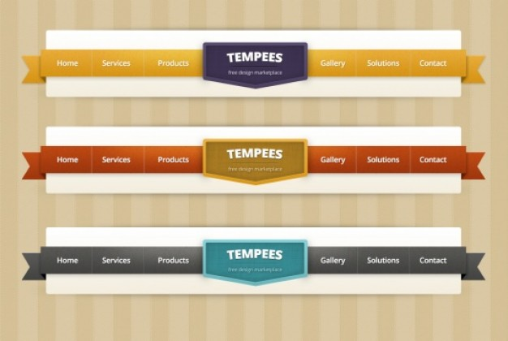

GRANIZO
DEFINIÇÂO
FORMAÇÂO
GRANIZO
Granizo (ou saraiva) é a forma de precipitação que consiste na queda
de pedaços irregulares de gelo, comumente chamados de pedras de granizo. Essas pedras, na Terra,
são compostas por água no estado sólido e medem entre 5 e 200 mm de diâmetro, sendo as pedras
maiores provenientes de tempestades mais severas. A queda de glóbulos ou pedaços de gelo que têm
entre 5 e 50 mm ou mais de diâmetro é denominada saraiva, sendo que este termo também é
utilizado por muitos institutos meteorológicos para se referir a qualquer tempestade com queda
de gelo. O código Metar classifica como GR o granizo com 5 mm de diâmetro ou mais, enquanto
que quando há pedras menores é codificado como GS. É possível, dentro da maioria das tempestades,
o granizo ser produzido pelas nuvens cumulonimbus. Sua formação requer ambientes de forte
movimento para cima da atmosfera da tempestade (semelhante aos furacões) e baixa altura do nível
de congelamento. É mais frequente a formação ocorrer no interior dos continentes, dentro de
latitudes médias da Terra, confinando-se a altitudes mais elevadas dentro dos trópicos.
DEFINIÇÂO
Qualquer tempestade que produz granizo que atinge o solo é considerada como uma tempestade de granizo.
Normalmente as pedras têm um diâmetro de 5 mm ou mais e podem crescer para 15 mm e pesar
mais de 0,5 kg. Segundo o Instituto de Meteorologia, a queda de glóbulos ou pedaços de
gelo que têm entre 5 e 50 mm ou mais de diâmetro é denominada saraiva, sendo que em alguns
casos este termo é utilizado em substituição à palavra granizo. De acordo com o Instituto Nacional
de Meteorologia (INMET), pedaços pequenos de gelo, abaixo dos 5 mm, são classificados como bolas
de gelo, bolas de neve ou granizo mole. Bolas isoladas são chamadas de pedras.
FORMAÇÃO
Como ocorre em uma precipitação de qualquer nuvem cumulonimbus, o granizo começa
como gotas de água. Com a ascensão dessas gotas e a temperatura abaixo de zero, a
água se congela quando entra em contato com os chamados núcleos de condensação. A
parte transversal de uma pedra de grande dimensão tem uma estrutura parecida com uma
cebola. Isso significa que o granizo é feito de camadas espessas e translúcidas,
alternadas com camadas mais finas, brancas e opacas. Ele é submetido a múltiplas descidas
e subidas, caindo em uma zona de umidade e recongelando quando é elevado. Pensava-se que este
movimento para cima e para baixo era o responsável pelas camadas sucessivas da pedra,
mas uma nova pesquisa, feita com base na teoria e estudo de campo, mostrou que isso nem sempre ocorre.